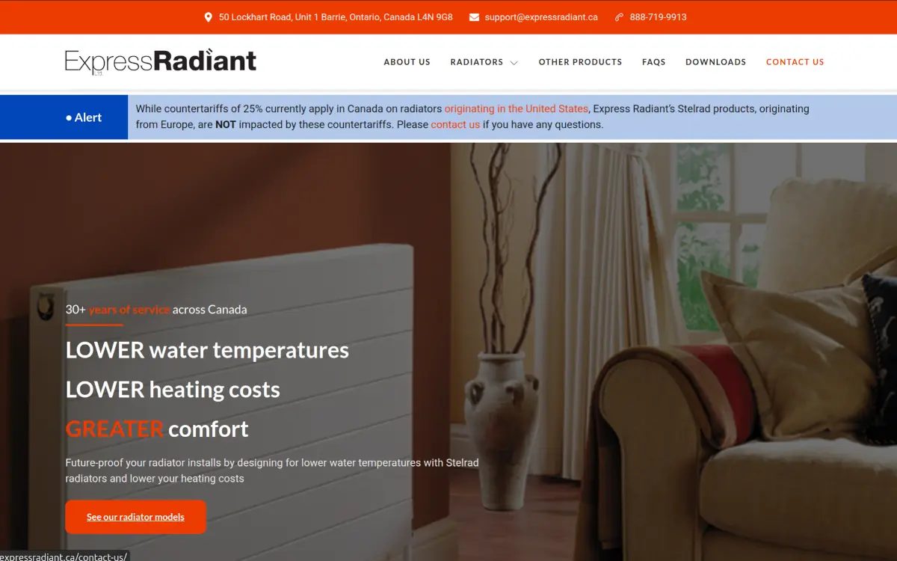
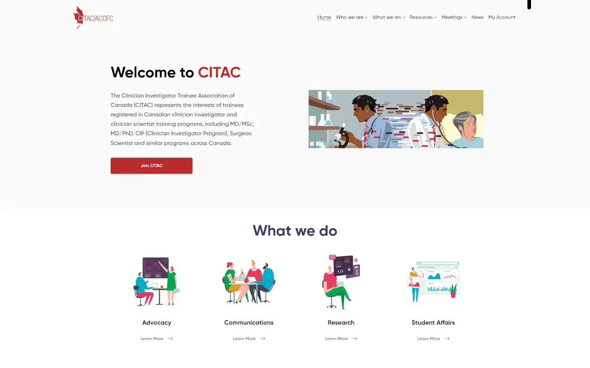
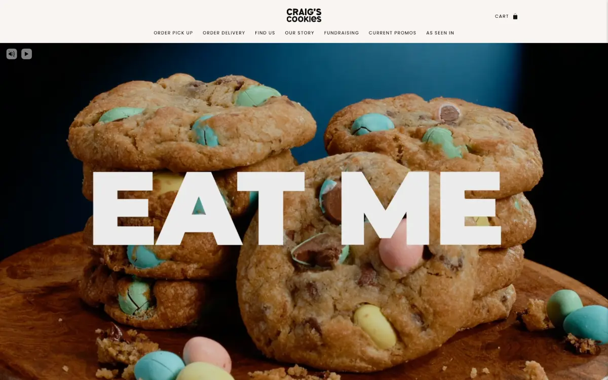
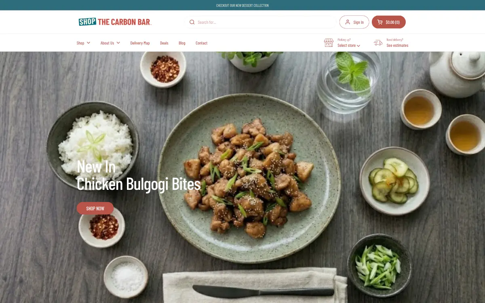
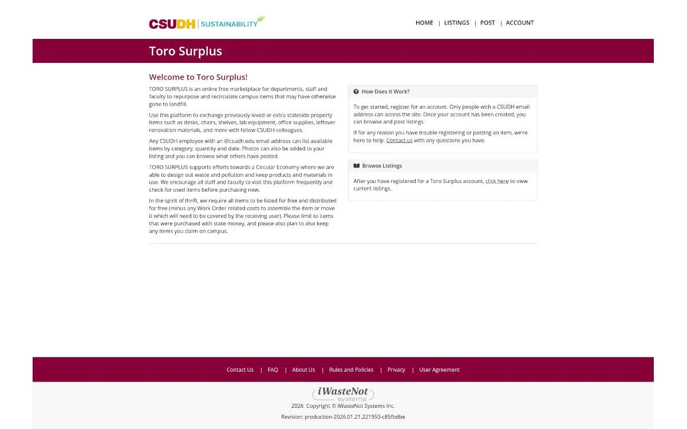
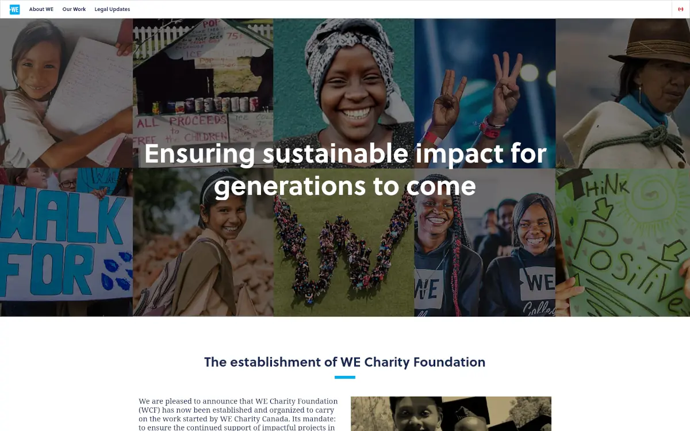

For over 15 years I've been building for the web, from marketing sites and WordPress builds to custom platforms and APIs. Today I specialize in Laravel/PHP back-ends, REST API design and modern JavaScript front-ends.
I bring strong DevOps instincts to every project: Docker-based environments, GitLab CI/CD, server administration and security hardening, so the things I ship keep running.
I'm comfortable owning features end-to-end on Agile teams, and running solo client engagements from first requirements through deployment. Since 2021 I've run my own practice in Oshawa, Ontario.
Backend
PHP · Laravel · CodeIgniter
CMS
WordPress · Filament · Shopify
APIs
REST · OAuth · Webhooks
Servers
Linux · Docker · LiteSpeed
Owner / Freelance Software Developer · Self-Employed
Building and hosting Laravel APIs and WordPress sites for 15 active clients, and maintaining a legacy AngularJS platform.
Software Engineer · Red Thread Innovations
Built React components for the Red Thread LMS as part of an Agile Scrum team.
Application Engineer · WE Charity
Built donation and trip-registration forms, and integrations that synced data with Salesforce and Shopify.
Web Developer · DIT Canada
Built CodeIgniter applications with API and online payment integrations, migrated 50+ sites to new servers, hardened security and modernized legacy client sites.
Sr. Web Developer · ALT Media
Led a team of 3 developers building client websites and e-commerce stores, and managed their hosting.
Web Developer · Metroland Media Group
Built WordPress themes and plugins for 20+ community news sites, and consolidated 100+ sites from 10 servers down to 2.

screenshotExpress Radiant — Redesign ↗
A full website redesign for the Canadian distributor of Stelrad steel panel radiators. Built in WordPress with Elementor Pro and ACF-driven product content, on managed hosting I run with LiteSpeed caching.

screenshotCITAC — Malware Recovery & Hardening ↗
Recovered the Clinician Investigator Trainee Association of Canada's WordPress site after a malware breach. I migrated it off their old host, removed the injected code, brought core, theme and plugins up to date, and locked down file permissions and access so it stays clean.

screenshotCraig's Cookies — Hero Video ↗
Added a full-width hero video to the homepage of this Shopify bakery storefront, with custom mute and play/pause controls. Built into the theme with Liquid, JavaScript and CSS so the layout holds up on everything from phones to wide desktop screens.

screenshotShop The Carbon Bar — Local Delivery ↗
Built a custom local-delivery solution for this online food shop. Customers enter their postal code to see whether delivery is available in their area, and the matching delivery fee is applied automatically at checkout.

screenshotiWasteNot Systems Suite — Marketplaces ↗
iWasteNot Systems is a Canadian software company that helps organizations cut waste. I worked on the Laravel REST API and AngularJS front end behind their reuse, recap & student reuse portal marketplaces, where members create accounts and list surplus items for others to claim instead of sending them to the landfill.

screenshotWE Charity — Website Rebuild ↗
For 25 years, WE Charity has supported youth and communities worldwide through programs like WE Schools and WE Villages. I was on the team that helped rebuild their website in React and TypeScript, turning Figma designs into reusable components.
Let's build something.
I'm open to freelance projects, contract roles and consulting. My inbox is always open.